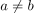
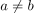
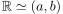
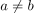

Homeomorphie eines offenen Intervalls zu den reellen Zahlen
1. Satz
Seien  mit , so folgt für das offene Intervall
mit , so folgt für das offene Intervall  bezüglich der Standardtopologien:
bezüglich der Standardtopologien:

1
(siehe: Homeomorphie)
Seien mit , so folgt für das offene Intervall bezüglich der Standardtopologien:
(siehe: Homeomorphie)